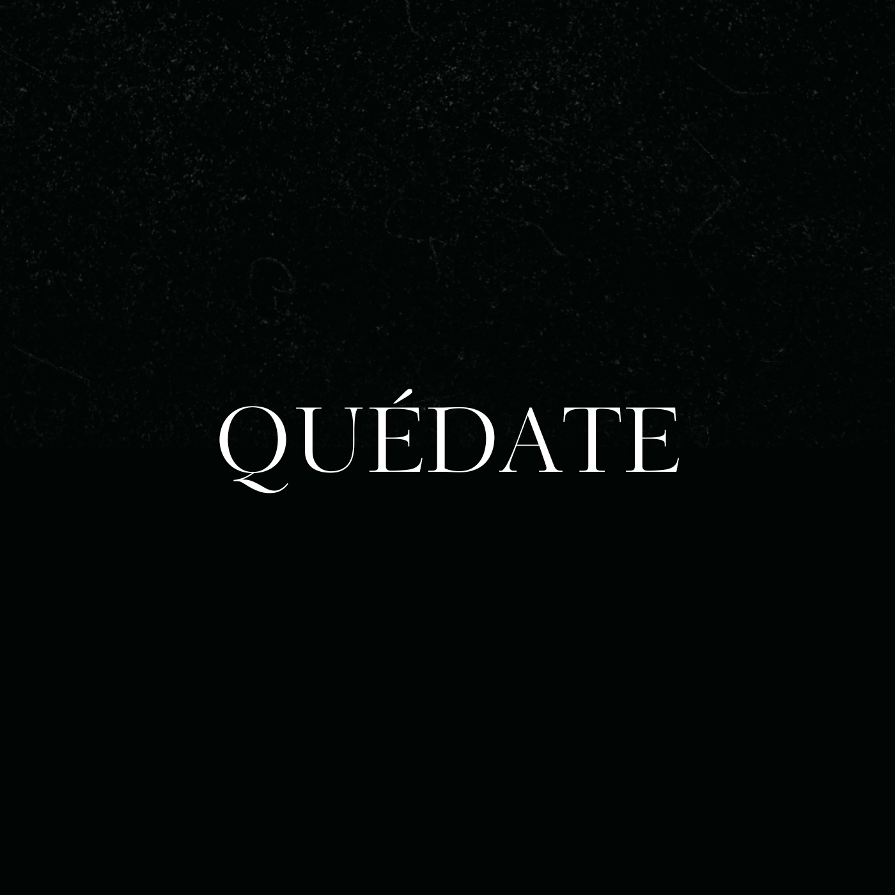

mi música
Creo música como una forma de documentar experiencias personales y procesos emocionales. Cada proyecto funciona como un capítulo dentro de un universo creativo en evolución.
Proyectos Musicales
Fusión de producción y lírica profunda, demostrando que del dolor del corazón nace el arte.
Escuchar
Vulnerabilidad en el arte y su importancia en este. "Quédate" es una canción íntima y personal que unifica estos sentimientos en una paleta sónica singular.
Escuchar